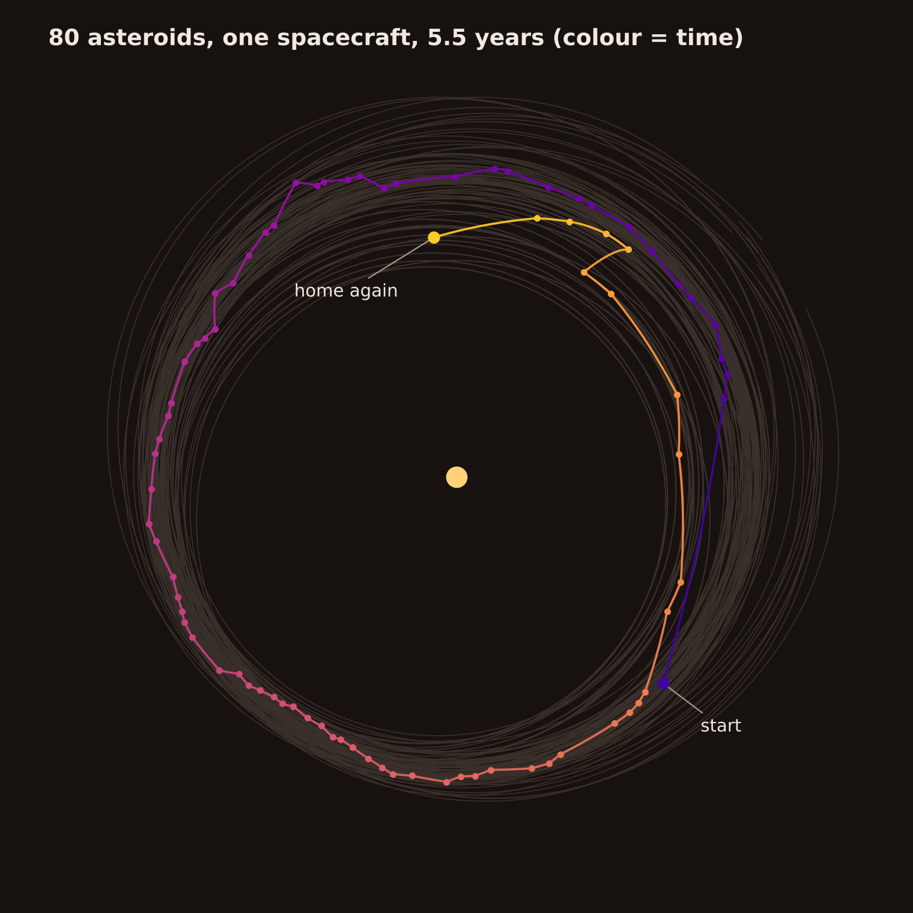
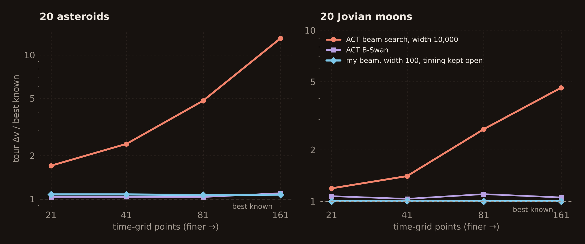
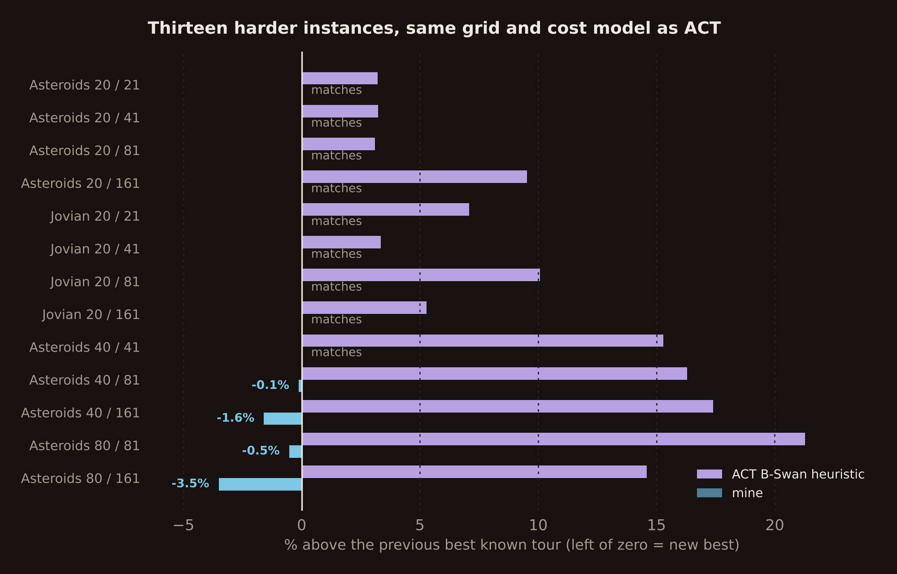
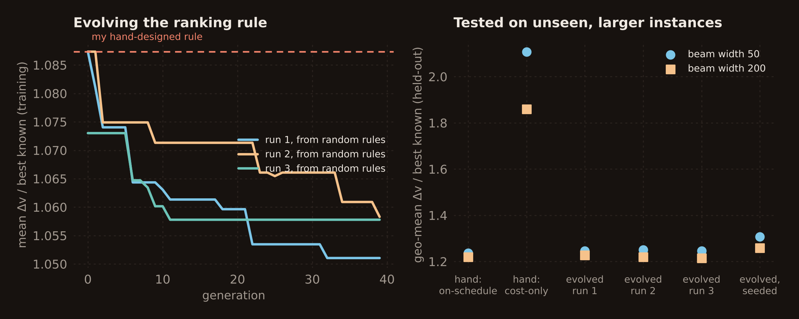

1The problem
ESA's Advanced Concepts Team published the Keplerian travelling salesperson problem in 2026 with a set of benchmark instances [1]. Each instance is a group of bodies on their orbits: 5 to 80 main-belt asteroids, or 4 to 20 moons of Jupiter. A spacecraft starts at the first body, has to rendezvous with every other one, and come back to the first body before the window closes. Each leg is a Lambert arc between two dates, and its cost is the velocity change at departure plus the one at arrival. Dates are restricted to a grid of 6 to 161 points across the window. The goal is the tour with the smallest total Δv.
It is harder than a normal travelling salesman problem because the "distance" between two asteroids changes all the time: the same pair can cost 2 km/s one month and 20 km/s the next. Choosing the order and choosing the dates are one problem, not two.

2First, make sure it is the same problem
A better number only means something if it is computed exactly the way ACT computes it. I wrote my own transfer-cost tables and an exact solver for small instances (dynamic programming over the set of visited bodies, the current body and the time). The cost model that matches theirs: Lambert arcs with any number of revolutions in both directions, departure plus arrival impulse, waiting at a body for free.
With that model, my exact solver reproduces all 22 optimal values ACT published for instances with up to 10 bodies, to the cent, each in about a second. This is what every comparison below rests on.
3The idea: keep the clock open
A classic beam search builds tours body by body and keeps the best few hundred or thousand partial tours. To compare partial tours, it has to fix when the spacecraft arrives at each body. On a coarse grid that is fine. On a fine grid it locks in early choices of date that later turn out expensive, and the beam has no way back.
My beam search does not fix the arrival date. For each partial tour it keeps a whole curve: the cheapest Δv to be at the current body, ready to leave, for every date on the grid. Adding a leg updates the curve exactly (a min-plus step over the grid). Partial tours are then ranked by a rule; my hand-designed one is "on schedule": the cost of the curve at the date where the tour would be if it spread its legs evenly over the window. For a finished order, the same curves give the optimal dates exactly, so the local search that polishes tours (moving bodies, swapping, reversing short stretches) always works with perfectly timed tours.

4Results on the thirteen harder instances
All instances with 20 or more bodies. Instances with fewer bodies are solved exactly (Section 2). "Best known" is the best of all Gurobi runs in [1] (4-hour limit, 2 × 64-core server), "lower bound" the best proven bound. My column is the best of my methods: the two beam searches, ant colony and MCTS, each followed by local search, and a longer iterated local search of 6 to 75 minutes per instance on one core.
| Instance (bodies / grid points) | Lower bound | Best known | ACT B-Swan | Mine | vs best known |
|---|---|---|---|---|---|
| Asteroids 20 / 21 | 118 105 | 118 105 | 121 898 | 118 105 | 0.00% |
| Asteroids 20 / 41 | 95 033 | 95 033 | 98 109 | 95 033 | 0.00% |
| Asteroids 20 / 81 | 80 955 | 92 545 | 95 404 | 92 545 | 0.00% |
| Asteroids 20 / 161 | 70 628 | 91 631 | 100 353 | 91 631 | 0.00% |
| Jovian moons 20 / 21 | 50 284 | 50 284 | 53 840 | 50 284 | 0.00% |
| Jovian moons 20 / 41 | 46 505 | 46 505 | 48 057 | 46 505 | 0.00% |
| Jovian moons 20 / 81 | 43 588 | 44 798 | 49 310 | 44 798 | 0.00% |
| Jovian moons 20 / 161 | 38 028 | 44 340 | 46 681 | 44 340 | 0.00% |
| Asteroids 40 / 41 | 391 076 | 391 076 | 450 839 | 391 076 | 0.00% |
| Asteroids 40 / 81 | 259 178 | 316 923 | 368 538 | 316 527 | -0.13% |
| Asteroids 40 / 161 | 224 816 | 312 501 | 366 870 | 307 515 | -1.60% |
| Asteroids 80 / 81 | 1 236 138 | 1 557 281 | 1 888 710 | 1 549 061 | -0.53% |
| Asteroids 80 / 161 | 762 357 | 1 420 768 | 1 627 976 | 1 370 931 | -3.51% |
On 4 instances my tour is cheaper than the previous best and on the other 9 it equals it to the cent. Five of those nine are proven optimal in [1], so matching is the best possible there. On the coarsest grids, where each leg takes a single grid step, beam search plus one local search ends up to 12% above the optimum, and the longer iterated local search closes that gap.

5New best-known tours
| Instance | Previous best | New | Change | Gap to lower bound | Worst arc miss | Tour |
|---|---|---|---|---|---|---|
| Asteroids 40 / 81 | 316 923 | 316 527 | -0.13% | 18.2% → 18.1% | 0.3 cm | JSON |
| Asteroids 40 / 161 | 312 501 | 307 515 | -1.60% | 28.1% → 26.9% | 0.7 cm | JSON |
| Asteroids 80 / 81 | 1 557 281 | 1 549 061 | -0.53% | 20.6% → 20.2% | 0.3 cm | JSON |
| Asteroids 80 / 161 | 1 420 768 | 1 370 931 | -3.51% | 46.3% → 44.4% | 0.8 cm | JSON |
Each new tour was checked by a separate script that shares no code with the solver (only the Lambert library, pykep): it reads the instance file, moves every body to the leg dates, solves each Lambert arc again, propagates the spacecraft along it to confirm it really reaches the next body (worst miss in the table), checks the visiting and date rules, and adds up the Δv. The totals agree with the solver to the last digit.
What this does and does not show
The new values are upper bounds on the optimum, found by heuristic search; I cannot prove any of them optimal. On the small instances where the optimum is known, my methods reach it, which says the search is sound, not that it is complete. The comparison is fair on the problem (same grid, same cost model, same rules) but not on computers: the old records came from a mixed-integer solver run for up to four hours on a large server, mine from heuristics on two CPU cores.
6Can the search rule be discovered automatically?
This is the question of ACT's internship topic: replace hand-designed parts of search methods (beam rules, rollouts, pheromone updates) with parts found by an automatic generate, test and refine loop [5, 6]. I tested it on the one component that mattered most in my beam search, the rule that ranks partial tours.
A genetic programming loop wrote ranking rules as formulas over eight features of a partial tour (cost on schedule, cheapest cost, cost a little earlier and later, last leg, progress, time used, cheapest next legs). It trained on six small instances only, and every rule was then tested unchanged on nine others, most of them larger.

What came out:
- Starting from random formulas, every run rediscovered the same principle as my hand rule: judge a partial tour by its cost on schedule and penalise using up time. Ranking by cost alone, the obvious choice, is 1.5 times worse on the held-out instances.
- None of the evolved rules beat the hand rule reliably on instances it had not seen: at beam width 200 they range from -0.4% to +0.7% against it. The gains seen in training did not transfer.
- The largest improvement in this project was structural, not a better formula: keeping the timing open (Section 3) is a change to how the search represents a tour. A search over formulas cannot invent that; a search over code, which is what language-model methods do [5, 6], could. That is the part I would most like to explore with the team.
7Limits
- The model is ACT's benchmark model: two-body dynamics, impulsive Lambert legs, dates on a fixed grid. Real low-thrust tours are a different problem.
- All values are for the grid of each instance. A finer grid gives cheaper tours; comparisons are only made on the same grid.
- My tours visit each body exactly once. ACT's formulation allows repeat visits, so a still cheaper tour could exist outside my search space.
- The automatic discovery used genetic programming over a fixed set of features, not a language model: this workspace has two CPU cores and no way to run one. The framework uses the same generate, evaluate, select loop, so a model-based generator can replace the GP step.
- Run times were short (minutes to about an hour per instance). Longer runs would probably improve the large instances further.
8Code and data
All code is public in the code folder: cost tables, exact solver, beam search, ant colony, MCTS, local search, the genetic programming loop, and the independent checker. The instance files are ACT's own (Zenodo, doi:10.5281/zenodo.14850862). The new tours are in tours/, one JSON file each.
9References
- M. Bannach, G. Acciarini, D. Izzo, The Keplerian Traveling Salesperson Problem, arXiv:2605.00010, 2026. Instances: doi:10.5281/zenodo.14850862.
- D. Izzo et al., Evolving solutions to TSP variants for active space debris removal, GECCO 2015.
- L. F. Simões, D. Izzo, E. Haasdijk, A. E. Eiben, Multi-rendezvous spacecraft trajectory optimization with beam P-ACO, EvoCOP 2017.
- M. Schmidt, H. Lipson, Distilling free-form natural laws from experimental data, Science 324, 2009.
- F. Liu et al., Evolution of Heuristics: towards efficient automatic algorithm design using large language model, ICML 2024.
- H. Ye et al., ReEvo: large language models as hyper-heuristics with reflective evolution, NeurIPS 2024.